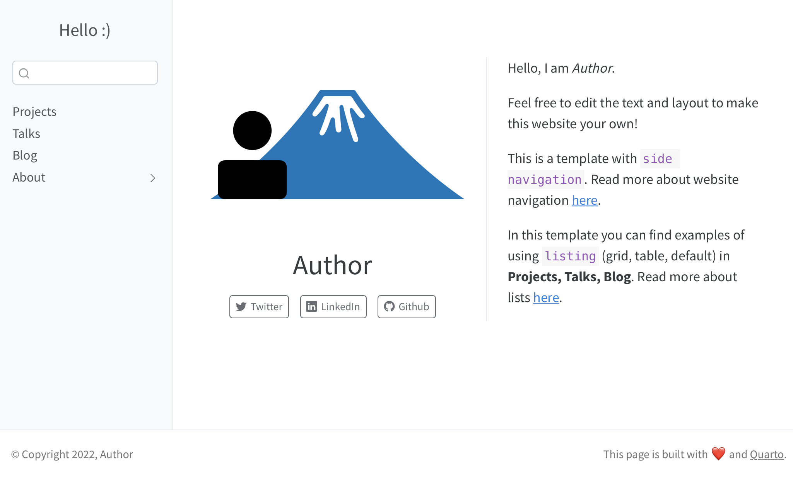

Template for personal website
Chi Zhang
2022-12-19
Source:../vignettes/template_personal.Rmd
template_personal.RmdIn this page you will find a slightly more complex personal website
setup. This template is different from the Minimal template
in the following ways:
Sidebar navigation
The About section is collapsed (sub-menu)
Listing is used to organize content in Projects, Talks, Blog sections
These modifications are particular useful when you have more content, and wish to present them in different ways.
Navigation: side or top
Side navigation bar can be useful if you have more topics to display.
This is the way to set up a sidebar in the _quarto.yml.
sidebar:
pinned: true
align: center
style: "docked"
collapse-level: 1
contents:
- text: "Projects"
href: projects/index.qmd
- text: "Talks"
href: talks/index.qmd
- text: "Blog"
href: blog.qmd
- section: "About"
contents:
- text: "About me"
href: about.qmd
- text: "This template"
href: about_template.qmd
Sub-menu
When sub-sections under a topic is desired, you can put them in the sub-menu.
In side navigation, it is specified by section and
contents in the _quarto.yml file.
In top navigation, it is specified by menu.
navbar:
left:
- text: "About"
menu:
- about.qmd
- about_template.qmdPage listing
Compared to the Minimal template, Projects page
contains more complex structures: page listing makes it possible to
organize topics in various layouts. This can be achieved by editing the
yaml header in projects/index.qmd.
Under contents, provide the folder where your projects
are stored; then specify type (grid, table or default).
listing:
- id: ehr
max-description-length: 500
image-height: 150px
fields: [image, title, description]
contents:
- project_1
- project_2
type: grid
grid-item-border: false
- id: packages
max-description-length: 80
image-height: 250px
fields: [title, description]
contents:
- pkg_1
- pkg_2
type: table
grid-item-border: false
sort-ui: false
filter-ui: falseAfter the yaml header, edit the markdown text and
reference the listing using the id:
It is convenient to use `id` to link to multiple folders.
::: {#ehr}
:::